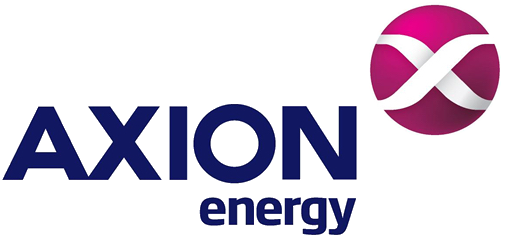
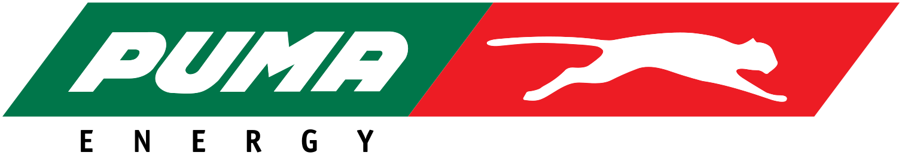

Trabajo Práctico Integrador · Gestión Estratégica Impulsada por Datos
Universidad Austral · Facultad de Ingeniería
Franco Descalzo · Tomás Monteiro · Ignacio Siaba
Resolver toda la parada del conductor en un solo lugar.
Playa, tienda FULL, Boxes y la App: combustible, comida, mantenimiento y pago en la misma parada.
Las cinco fuerzas de Porter, vistas desde arriba.
La fuerza que más pesa es la rivalidad: la demanda cae y 4 empresas tienen más del 90% del mercado.
Qué implica: cada litro se le saca a otro. La rentabilidad tiene que salir del costo.
YPF compite en todo el mercado y gana porque le cuesta menos, no por ser exclusiva.
El cliente es sensible al precio y la demanda cae: la rentabilidad sale del costo.
Tres formatos, una sola estrategia: Refiplus, Núcleo y Black.
Bajo costo, para zonas alejadas.
Carga rápida y autodespacho, sin servicios ni infraestructura pesada.
La regla: Inversión mínima por estación.
Las 73 estaciones de Refinor pasan a Refiplus.
El formato masivo: concentra el volumen.
Playa con autodespacho, tienda FULL y Boxes.
La regla: Toda inversión tiene que bajar el costo neto por litro.
Costo neto = costo de la estación menos lo que aporta la tienda.
Premium: la vitrina de la marca.
Atención en pista, tecnología y gastronomía de alta gama en unas 16 estaciones.
La regla: Cupo fijo, pagado por inversores privados: sus costos no pasan al resto.
| 22,7%894 bocas | Fuerte en premium urbano: no pelear ahí, ganar en el masivo. | |
 | 12,2%549 bocas | Apuesta a las rutas: defenderlas con tienda y servicio. |
 | ~5%416 bocas | Detrás está Trafigura. |
| Blancas | s/d986 bocas | Sin marca ni escala: ofrecerles Refiplus. |
Prioridad de clientes: viajero de ruta, particular urbano (identificado en la App), flotas y agro, y transporte profesional.
| F1 | Margen total de la red | resultado | +5% real | base a medir |
| F2 | Costo operativo por m³ | resultado | −5% real | base a medir |
| F3 | Ingresos no combustibles | resultado | 5% | hoy ≈ 4% |
| F4 | Brecha vs. precio de importar | actuación | ≤ 10% | hoy 15–20% |
| C1 | Participación de mercado | resultado | ≥ 55% | hoy 55,1% |
| C4 | Precio YPF / competidor | actuación | ≤ 1,00 | Núcleo y Refiplus |
| P1 | Estaciones con precio por modelo | actuación | 100% | Núcleo y Refiplus |
| P4 | Cargas con cliente identificado | actuación | 55% | ref. ~40% digital |
7 indicadores de resultado y 9 de actuación. Sin dato público, la base se mide en el 1.er trimestre de 2027.
se registra la carga
llega en minutos; el resto, por lotes diarios
entra al lakehouse en AWS: dato crudo, para auditoría
dato validado, con el estado actual
warehouse y modelo del tablero
El mismo dato validado alimenta al RTIC, que publica el precio en el surtidor en menos de 5 minutos, y al tablero, que lo mide.
1 fila = 1 despacho en surtidor
m³ · importe · comisión · costo · margen
9 tablas de hechos con dimensiones compartidas. SCD2: si una boca pasa de Refinor a Refiplus, se guarda el antes y el después.
A1 · Dato confiable
reglas cumplen su propio umbral
meta del indicador: ≥ 98%
Valores de referencia del tablero diario de calidad.
Gracias.
Franco Descalzo · Tomás Monteiro · Ignacio Siaba